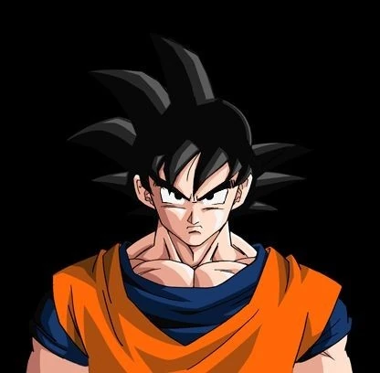
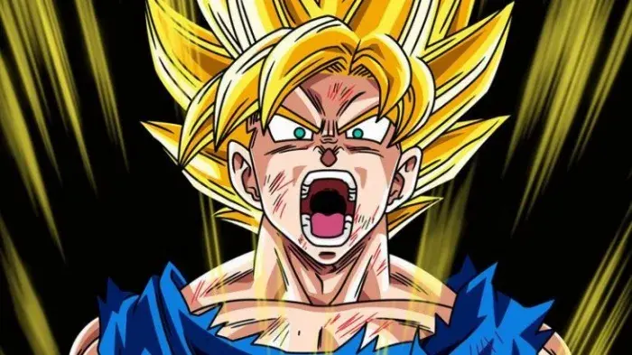

Dragon Ball Z
Dragon Ball Z es una serie de anime y manga que narra las aventuras de Goku, un guerrero saiyajin que lucha por proteger la Tierra de villanos intergalácticos.
Personajes importantes
- Goku: El protagonista, un guerrero saiyajin de buen corazón.
- Vegeta: El príncipe de los saiyajin, un rival que se convierte en aliado de Goku.
- Gohan: El hijo de Goku, un guerrero con un gran potencial.
- Krillin: Un humano amigo de Goku, uno de los personajes más queridos y con mas muertes de la serie.
- Piccolo: Un antiguo enemigo que se convierte en un aliado valioso.
Transformaciones legendarias
Los personajes de Dragon Ball Z poseen la capacidad de transformarse en estados más poderosos para enfrentar desafíos más grandes.
